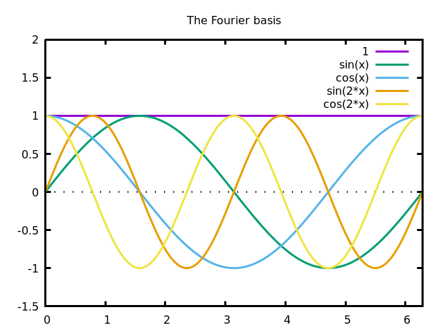

In this note we describe the construction of the Cauchy basis, whose functions satisfy at the same time Dirichlet and Neumann boundary conditions. Besides being beautiful, it is useful to solve fourth-order boundary problems.
Everybody knows the Fourier basis of \(L^2([0,2\pi])\), defined by sine and cosine functions of integer frequencies.
\[1,\cos(x),\cos(2x),\ldots,\sin(x),\sin(2x),\ldots\]

This was the original basis used by Joseph Fourier to study the heat equation. Notice that cosines are symmetric around the center of the interval, and sines are anti-symmetric. Thus, all the functions of this basis are necessary to represent arbitrary functions on the whole interval.
Less well-known are the cosine basis, defined by cosines of half-integer frequencies \[1,\cos\left(\frac{1}{2}x\right), \cos(x), \cos\left(\frac{3}{2}x\right), \cos(2x),\ldots\]
and the sine basis, defined by sines of half-integer frequencies \[\sin\left(\frac{1}{2}x\right), \sin(x), \sin\left(\frac{3}{2}x\right), \sin(2x), \ldots\]
Each one of these three sequences of functions is a Hilbert basis of the space \(L^2([0,2\pi])\). In particular, you can express a sine as a linear combination of cosines, and vice-versa. This is a favourite exam question of mine. Of course, the convergence is not uniform on the boundaries of the interval.
The cosine and sine bases are very useful when you want to express solutions of a differential equation (or a variational problem) satisfying particular boundary conditions. Notice that if \(f(x)\) is a finite linear combination of the sine basis, then \(f(0)=f(2\pi)=0\) and if it is a finite linear combination of the cosine basis, then \(f'(0)=f'(2\pi)=0\). The same relationships hold for series as long as the coefficients decrease fast enough. Thus, the sine basis is useful for Dirichlet boundary conditions, and the cosine basis is useful for Neumann boundary conditions.
The functions of the Cauchy basis, defined below, satisfy simultaneously the four conditions \(f(0)=f(1)=f'(0)=f'(1)=0\).

A simple construction of such a set of functions is obtained by considering eigenfunctions of the fourth derivative that satisfy the four boundary conditions.
Eigenfunctions of the fourth derivative are of the form \(\exp(\rho x)\) where \(\rho\) is a fourth-root of \(1\), thus \(\rho\in\{1,-1,i,-i\}\). Equivalently, they are linear combinations of \(\sin\), \(\cos\), \(\sinh\) and \(\cosh\)
\[\varphi(x)=\alpha\cos(\lambda x)+\beta\sin(\lambda x)+\gamma\cosh(\lambda x)+\delta\sinh(\lambda x)\]
This is an eigenfunction of the fourth derivative with eigenvalue \(\lambda^4\), that we can assume to be real positive.
By imposing the four boundary conditions, we obtain a linear system on the coefficients \((\alpha,\beta,\gamma,\delta)\), with a parameter \(\lambda\). The matrix of this linear system is singular, and its determinant vanishes when \(\lambda\) satisfies the equation \[\cos\lambda\cosh\lambda=1\] The solutions of this equation (which are slight perturbations of even multiples of \(pi/2\)) are the eigenvalues of our basis.
A good enough approximation is given by \[\lambda_n = \frac{2n+1}{2}\pi - (-1)^n2\exp\left(-\frac{(2n+1)}{2}\pi\right)\] and the eigenfunctions are thus \[\varphi_n(x)=\sin(\lambda_nx)-\sinh(\lambda_nx)+\beta_n(\cos(\lambda_nx)-\cosh(\lambda_nx))\] where \[\beta_n=\frac{\sinh\lambda_n-\sin\lambda_n}{\cos\lambda_n-\cosh\lambda_n}.\]
Notice that, although the functions \(\varphi_n\) are beautiful and symmetric inside the interval \([0,1]\), they explode in wild ways outside this interval:

We have just defined a set of functions \(\varphi_n(x)\). By construction, they are \(C^\infty\) functions on the interval \([0,1]\) that satisfy \(0=\varphi_n(0)=\varphi_n(1)=\varphi_n'(0)=\varphi_n'(1)\). Since these functions are eigenvectors of a linear operator with different eigenvalues, they must be orthogonal. The following remains to be done:
Prove that \(\{\varphi_n(x)\}\) is a Hilbert basis of \(L^2([0,1])\)
Prove that \(|\varphi_n(x)|\le 2\) for \(x\in[0,1]\)
Prove that \(\varphi_{2n}(x)=-\varphi_{2n}(1-x)\) for \(x\in[0,1]\) (so that \(\varphi_{2n}(1/2)=0\)).
Prove that \(\varphi_{2n+1}(x)=\varphi_{2n+1}(1-x)\) for \(x\in[0,1]\) (so that \(\varphi'_{2n+1}(1/2)=0\)).
Prove that \(\varphi_n\) has \(n-1\) zeros on \((0,1)\), and identify them.
Compute the exact normalization coefficients required so that the basis is orthonormal.
Obtain an effective algorithm/formula to evaluate \(\varphi_n(x)\) for large values of \(n\), avoiding the numerical cancellations that appear with the current expression. Notice that, thanks to the symmetry properties above, the formula only needs to be stable for \(0\le x\le\frac{1}{2}\) (the difficult case being near \(\frac{1}{2}\)).
Rewrite the definition so that the interval is centered around 0, and the symmetries are more visible.
Study how the regularity of a function can be measured from the rate of decrease of its "Cauchy coefficients"
Develop a theory of sampling using "Cauchy polynomials" as an interpolation model
Develop a "Fast Cauchy Transform", to obtain the coefficients of these polynomials from their samples.
Extend this basis to the case of a square.
Extend this basis to the case of a disk.
Some of these propositions are easy, others may not actually be possible (especially the last one).
In this section we detail the construction leading to the Cauchy basis. The computation has two parts. First, we explain how the equation \(\cos\lambda\cosh\lambda=1\) is obtained, and then we propose a numerical approximation of the solutions of this equation.
We start with the basic form \[\varphi(x)= \alpha\cos\lambda x +\beta\sin\lambda x +\gamma\cosh\lambda x +\delta\sinh\lambda x\] and we want to determine values of the five parameters \(\alpha,\beta,\gamma,\delta,\lambda\) so that \(\varphi\) satisfies the four boundary conditions \(0=\varphi(0)=\varphi(1)=\varphi'(0)=\varphi'(1)\). We have \[\varphi'(x)=\lambda\left[ -\alpha\sin\lambda x +\beta\cos\lambda x +\gamma\sinh\lambda x +\delta\cosh\lambda x \right]\] And setting \(0=\varphi(0)\) and \(0=\varphi'(0)\) gives respectively \(\gamma=-\alpha\) and \(\delta=-\beta\), thus \[\varphi(x)= \alpha\left(\cos\lambda x-\cosh\lambda x\right) + \beta\left(\sin\lambda x-\sinh\lambda x\right)\] and \[\varphi'(x)=\lambda \left[ \alpha\left(-\sin\lambda x-\sinh\lambda x\right) + \beta\left(\cos\lambda x-\cosh\lambda x\right) \right]\] To simplify the notation, we write \[\begin{aligned} c &= \cos\lambda \\ s &= \sin\lambda \\ k &= \cosh\lambda \\ z &= \sinh\lambda \\\end{aligned}\] thus the conditions \(0=\varphi(1)\) and \(0=\varphi'(1)\) read \[\begin{aligned} 0 &= \alpha(c-k)+\beta(s-z) \\ 0 &= \alpha(-s-z)+\beta(c-k) \\\end{aligned}\] or, in matrix form \[\begin{pmatrix} c-k & s-z \\ -s-z & c-k \\ \end{pmatrix} \begin{pmatrix} \alpha \\ \beta \\ \end{pmatrix} = \begin{pmatrix} 0 \\ 0 \\ \end{pmatrix}\] If \((\alpha,\beta)\) is not the zero vector, then the matrix must be singular, thus \[(c-k)^2+(s+z)(s-z)=0\] this condition can be simplified using the trigonometric identities \(c^2+s^2=1\) and \(k^2-z^2=1\) to obtain the equivalent equation \(ck=1\) : \[\cos\lambda\cosh\lambda=1\] Besides the non-interesting case \(\lambda=0\), this equation has an infinite sequence of solutions \(\pm\lambda_n\) that determine the spectrum of our problem. Given such a solution \(\lambda_n\), the corresponding values of \(\alpha_n,\beta_n\) are determined from the condition \(0=\varphi(1)\): \[0 = \alpha_n(\cos\lambda_n-\cosh\lambda_n) +\beta_n(\sin\lambda_n-\sinh\lambda_n)\] we normalize the solution with \(\alpha_n=1\) (this is an arbitrary choice, maybe not the best one, but it produces nicely bounded functions on \([0,1]\)). Now \[\beta_n=\frac{\cos\lambda_n-\cosh\lambda_n}{\sinh\lambda_n-\sin\lambda_n}\] and the functions of the basis are \[\varphi_n(x)=\sin(\lambda_nx)-\sinh(\lambda_nx)+\beta_n(\cos(\lambda_nx)-\cosh(\lambda_nx))\] Or, by rearranging the terms, \[\varphi_n(x)= \frac{ (\beta_n-1) e^{\lambda_nx} +(\beta_n+1) e^{-\lambda_nx} +(\beta_n-i) e^{i\lambda_nx} +(\beta_n+i) e^{-i\lambda_nx} }{2}\] or even \[\varphi_n(x)=\frac{1}{2}\sum_{\rho^4=1} (\beta_n-\rho)e^{\rho\lambda_n x}\] and this last expression is more amenable to computations (derivatives, integrals, scalar products).
By plotting the function \(x\to\cos x\cosh x\), it is clear that it crosses the value \(1\) infinitely many times, very near to the zeros of \(\cos x\), except for \(x=\pi/2\):

Thus, the zeros of the function \(\lambda\to\cos\lambda\cosh\lambda-1\) have the form \[\lambda_n = \frac{2n+1}{2}\pi + \varepsilon_n\] where \(\varepsilon_n\) are numbers that tend very fast to zero and alternate sign. We can estimate the number \(\varepsilon_n\) by computing the tangent to the graph of \(\cos x\cosh x\) at \(x=\frac{2n+1}{2}\pi\), and finding its intersection with the horizontal line \(y=1\): \[1 = \cos x_n\cosh x_n + \left( \cos x_n\sinh x_n - \sin x_n\cosh x_n \right) \varepsilon_n\] for \(x_n=\frac{2n+1}{2}\pi\). Since \(\cos x_n=0\) and \(\sin x_n=-(-1)^n\), this simplifies to \[\varepsilon_n=\frac{-(-1)^n}{\cosh x_n} \approx -2e^{-x_n}\] resulting in the approximation proposed above \[\lambda_n\approx\frac{2n+1}{2}\pi-2(-1)^n\exp\left(-\frac{2n+1}{2}\pi\right).\] This approximation is useful, at least for plotting purposes. Notice that the quality of the approximation improves as \(n\) grows, so a satisfactory solution can be attained by tabulating the exact values of \(\lambda_n\) for small values of \(n\), and using the approximation for the others.
This is the complete gnuplot code to produce plots of the Cauchy basis:
X(n) = (2*n+1)*pi/2 # approximate eigenvalues (to 0th order)
L(n) = X(n) - (-1)**n/cosh(X(n)) # refined eigenvalues (to 1st order)
s(x) = sin(x) - sinh(x) # notation
c(x) = cos(x) - cosh(x) # notation
u(l,x) = s(l*x) - c(l*x) * s(l)/c(l) # generic eigenfunction
v(n,x) = u(L(n),x) # n-th eigenfunction
plot [-0:1] [-2:3] v(1,x),v(2,x),v(3,x),v(4,x),v(5,x)